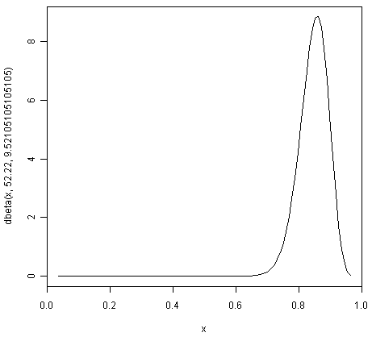
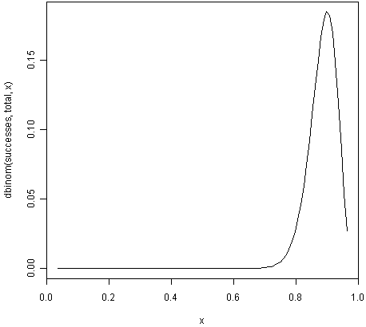
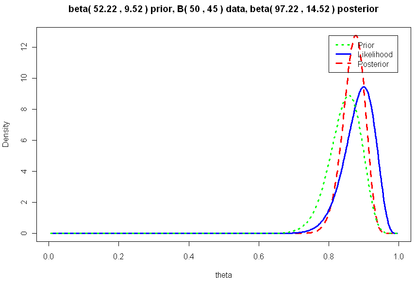

This booklet tells you how to use the R statistical software to carry out some simple analyses using Bayesian statistics.
This booklet assumes that the reader has some basic knowledge of Bayesian statistics, and the principal focus of the booklet is not to explain Bayesian statistics, but rather to explain how to carry out these analyses using R.
If you are new to Bayesian statistics, and want to learn more about any of the concepts presented here, I would highly recommend the Open University book “Bayesian Statistics” (product code M249/04), available from from the Open University Shop.
There is a pdf version of this booklet available at https://github.com/avrilcoghlan/LittleBookofRBayesianStatistics/ raw/master/_build/latex/BayesianStats.pdf.
If you like this booklet, you may also like to check out my booklets on using R for biomedical statistics, http://a-little-book-of-r-for-biomedical-statistics.readthedocs.org/, using R for time series analysis, http://a-little-book-of-r-for-time-series.readthedocs.org/, and using R for multivariate analysis, http://little-book-of-r-for-multivariate-analysis.readthedocs.org/.
Bayesian analysis can be useful for estimating a proportion, when you have some rough idea of what the value of the proportion is, but have relatively little data.
An appropriate prior to use for a proportion is a Beta prior.
For example, if you want to estimate the proportion of people like chocolate, you might have a rough idea that the most likely value is around 0.85, but that the proportion is unlikely to be smaller than 0.60 or bigger than 0.95.
You can find the best Beta prior to use in this case by specifying that the median (50% percentile) of the prior is 0.85, that the 99.999% percentile is 0.95, and that the 0.001% percentile is 0.60:
> quantile1 <- list(p=0.5, x=0.85) # we believe the median of the prior is 0.85
> quantile2 <- list(p=0.99999,x=0.95) # we believe the 99.999th percentile of the prior is 0.95
> quantile3 <- list(p=0.00001,x=0.60) # we believe the 0.001st percentile of the prior is 0.60
We can then use the findBeta() function below to find the most appropriate Beta prior to use.
> findBeta <- function(quantile1,quantile2,quantile3)
{
# find the quantiles specified by quantile1 and quantile2 and quantile3
quantile1_p <- quantile1[[1]]; quantile1_q <- quantile1[[2]]
quantile2_p <- quantile2[[1]]; quantile2_q <- quantile2[[2]]
quantile3_p <- quantile3[[1]]; quantile3_q <- quantile3[[2]]
# find the beta prior using quantile1 and quantile2
priorA <- beta.select(quantile1,quantile2)
priorA_a <- priorA[1]; priorA_b <- priorA[2]
# find the beta prior using quantile1 and quantile3
priorB <- beta.select(quantile1,quantile3)
priorB_a <- priorB[1]; priorB_b <- priorB[2]
# find the best possible beta prior
diff_a <- abs(priorA_a - priorB_a); diff_b <- abs(priorB_b - priorB_b)
step_a <- diff_a / 100; step_b <- diff_b / 100
if (priorA_a < priorB_a) { start_a <- priorA_a; end_a <- priorB_a }
else { start_a <- priorB_a; end_a <- priorA_a }
if (priorA_b < priorB_b) { start_b <- priorA_b; end_b <- priorB_b }
else { start_b <- priorB_b; end_b <- priorA_b }
steps_a <- seq(from=start_a, to=end_a, length.out=1000)
steps_b <- seq(from=start_b, to=end_b, length.out=1000)
max_error <- 10000000000000000000
best_a <- 0; best_b <- 0
for (a in steps_a)
{
for (b in steps_b)
{
# priorC is beta(a,b)
# find the quantile1_q, quantile2_q, quantile3_q quantiles of priorC:
priorC_q1 <- qbeta(c(quantile1_p), a, b)
priorC_q2 <- qbeta(c(quantile2_p), a, b)
priorC_q3 <- qbeta(c(quantile3_p), a, b)
priorC_error <- abs(priorC_q1-quantile1_q) +
abs(priorC_q2-quantile2_q) +
abs(priorC_q3-quantile3_q)
if (priorC_error < max_error)
{
max_error <- priorC_error; best_a <- a; best_b <- b
}
}
}
print(paste("The best beta prior has a=",best_a,"b=",best_b))
}
To use the findBeta() function, you first need to copy and paste it into R. The findBeta() function makes use of the beta.select() function from the LearnBayes R package, so you first need to install the LearnBayes package (for instructions on how to install an R package, see How to install an R package).
You can then load the LearnBayes package, and use findBeta() to find the best Beta prior for a proportion. For example, to find the best Beta prior for the proportion of individuals who like chocolate, where you believe the most likely value of the proportion is 0.85, and the value is almost definitely between 0.60 and 0.95, you can type:
> library("LearnBayes")
> findBeta(quantile1,quantile2,quantile3)
[1] "The best beta prior has a= 52.22 b= 9.52105105105105"
This tells us that the most appropriate prior to use for the proportion of individuals who like chocolate is a Beta prior with a=52.22 and b=9.52, that is, a Beta(52.22, 9.52) prior.
We can plot the prior density by using the “curve” function:
> curve(dbeta(x,52.22,9.52105105105105)) # plot the prior

Note that in the command above we use the “dbeta()” function to specify that the density of a Beta(52.22,9.52105105105105) distribution.
We can see from the picture of the density for a Beta(52.22,9.52105105105105) distribution that it represents our prior beliefs about the proportion of people who like chocolate fairly well, as the peak of the distribution is at about 0.85, and the density lies almost entirely between about 0.68 and 0.97.
Say you want to estimate a proportion, and you have a small data set that you can use for this purpose. For example, if you want to estimate the proportion of people who like chocolate, you may have carried out a survey of 50 people, and found that 45 say that they like chocolate.
This small data set can be used to calculate the conditional p.m.f. (probability mass function) of the proportion given the observed data. This is called the likelihood function. It represents how likely the possible values of the proportion are, given the observed data.
If you want to estimate a proportion, and have a small data set, you can calculate the likelihood function for the proportion using the function calcLikelihoodForProportion() below:
> calcLikelihoodForProportion <- function(successes, total)
{
curve(dbinom(successes,total,x)) # plot the likelihood
}
The function calcLikelihoodForProportion() takes two input arguments: the number of successes observed in the sample (eg. the number of people who like chocolate in the sample), and the total sample size.
You can see that the likelihood function is being calculated using the Binomial distribution (using the R “dbinom()” function). That is, the likelihood function is the probability mass function of a B(total,successes) distribution, that is, of a Binomial distribution where the we observe “successes” successes out of a sample of “total” observations in total.
For example, if we did a survey of 50 people, and found that 45 say they like chocolate, then our total sample size is 50 and we have 45 “successes”. We can calculate the likelihood function for the proportion of people who like chocolate by typing:
> calcLikelihoodForProportion(45, 50)

You can see that the peak of the likelihood distribution is at 0.9, which is equal to the sample mean (45/50 = 0.9). In other words, the most likely value of the proportion, given the observed data, is 0.9.
Say you are trying to estimate a proportion, and have a prior distribution representing your beliefs about the value of that proportion. If you have collected some data, you can also calculate the likelihood function for the proportion given the data.
However, after observing the data, you may wish to update the prior distribution for the proportion, taking the data into consideration. That is, you may wish to calculate the conditional distribution of the proportion given the data and the prior. This is is called the posterior distribution for the proportion.
The posterior distribution ssummarises what is known about the proportion after the data has been observed, and combines the information from the prior and the data.
In our example of estimating the proportion of people who like chocolate, we have a Beta(52.22,9.52) prior distribution (see above), and have some data from a survey in which we found that 45 out of 50 people like chocolate. We can calculate the posterior distribution for the proportion given the prior and data using the calcPosteriorForProportion() function below (which I adapted from “triplot” in the LearnBayes package):
> calcPosteriorForProportion <- function(successes, total, a, b)
{
# Adapted from triplot() in the LearnBayes package
# Plot the prior, likelihood and posterior:
likelihood_a = successes + 1; likelihood_b = total - successes + 1
posterior_a = a + successes; posterior_b = b + total - successes
theta = seq(0.005, 0.995, length = 500)
prior = dbeta(theta, a, b)
likelihood = dbeta(theta, likelihood_a, likelihood_b)
posterior = dbeta(theta, posterior_a, posterior_b)
m = max(c(prior, likelihood, posterior))
plot(theta, posterior, type = "l", ylab = "Density", lty = 2, lwd = 3,
main = paste("beta(", a, ",", b, ") prior, B(", total, ",", successes, ") data,",
"beta(", posterior_a, ",", posterior_b, ") posterior"), ylim = c(0, m), col = "red")
lines(theta, likelihood, lty = 1, lwd = 3, col = "blue")
lines(theta, prior, lty = 3, lwd = 3, col = "green")
legend(x=0.8,y=m, c("Prior", "Likelihood", "Posterior"), lty = c(3, 1, 2),
lwd = c(3, 3, 3), col = c("green", "blue", "red"))
# Print out summary statistics for the prior, likelihood and posterior:
calcBetaMode <- function(aa, bb) { BetaMode <- (aa - 1)/(aa + bb - 2); return(BetaMode); }
calcBetaMean <- function(aa, bb) { BetaMean <- (aa)/(aa + bb); return(BetaMean); }
calcBetaSd <- function(aa, bb) { BetaSd <- sqrt((aa * bb)/(((aa + bb)^2) * (aa + bb + 1))); return(BetaSd); }
prior_mode <- calcBetaMode(a, b)
likelihood_mode <- calcBetaMode(likelihood_a, likelihood_b)
posterior_mode <- calcBetaMode(posterior_a, posterior_b)
prior_mean <- calcBetaMean(a, b)
likelihood_mean <- calcBetaMean(likelihood_a, likelihood_b)
posterior_mean <- calcBetaMean(posterior_a, posterior_b)
prior_sd <- calcBetaSd(a, b)
likelihood_sd <- calcBetaSd(likelihood_a, likelihood_b)
posterior_sd <- calcBetaSd(posterior_a, posterior_b)
print(paste("mode for prior=",prior_mode,", for likelihood=",likelihood_mode,", for posterior=",posterior_mode))
print(paste("mean for prior=",prior_mean,", for likelihood=",likelihood_mean,", for posterior=",posterior_mean))
print(paste("sd for prior=",prior_sd,", for likelihood=",likelihood_sd,", for posterior=",posterior_sd))
}
To use the “calcPosteriorForProportion()” function, you will first need to copy and paste it into R. It takes four arguments: the number of successes and total sample size in your data set, and the a and b values for your Beta prior.
For example, to estimate the proportion of people who like chocolate, you had a Beta(52.22,9.52) prior and had observed in a survey that 45 out of 50 people like chocolate. Therefore, the number of successes is 45, the sample size is 50, and a and b for the prior are 52.22 and 9.52 respectively. Therefore, we can calculate the posterior for the proportion of people who like chocolate, given the data and prior, by typing:
> calcPosteriorForProportion(45, 50, 52.22, 9.52)
[1] "mode for prior= 0.857381988617342 , for likelihood= 0.9 , for posterior= 0.876799708401677"
[1] "mean for prior= 0.845804988662132 , for likelihood= 0.884615384615385 , for posterior= 0.870055485949526"
[1] "sd for prior= 0.0455929848904483 , for likelihood= 0.0438847130123102 , for posterior= 0.0316674748482802"

Since the prior and posterior are distributions, the area under their densities is 1. The likelihood has been scaled so that the area underneath it is also 1, so that it is easy to compare the likelihood with the prior and posterior.
Therefore, the prior and likelihood curves should look the same shape as those plotted before (see above), but the y-axis scale is different for the likelihood scale compared to the plot made using calcLikelihoodForProportion() above.
Note that the peak of the posterior always lies somewhere between the peaks of the prior and the likelihood, because it combines information from the prior and the likelihood (which is based on the data).
In our example of estimating the proportion of people who like chocolate, the peak of the posterior is roughly half-way between the peaks of the likelihood and prior, indicating that the prior and the data contribute roughly equally to the posterior.
Here are some links for further reading.
For a more in-depth introduction to R, a good online tutorial is available on the “Kickstarting R” website, cran.r-project.org/doc/contrib/Lemon-kickstart.
There is another nice (slightly more in-depth) tutorial to R available on the “Introduction to R” website, cran.r-project.org/doc/manuals/R-intro.html.
To learn about Bayesian Statistics, I would highly recommend the book “Bayesian Statistics” (product code M249/04) by the Open University, available from the Open University Shop.
There is a book available in the “Use R!” series on using R for multivariate analyses, Bayesian Computation with R by Jim Albert.
Many of the examples in this booklet are inspired by examples in the excellent Open University book, “Bayesian Statistics” (product code M249/04), available from the Open University Shop.
I will be grateful if you will send me (Avril Coghlan) corrections or suggestions for improvements to my email address alc@sanger.ac.uk
The content in this book is licensed under a Creative Commons Attribution 3.0 License.